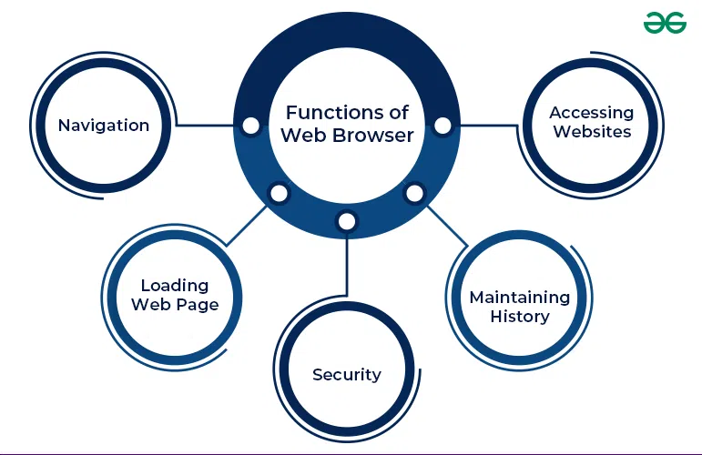

Core Browser Functions
- Requests web pages from servers
- Displays text, images, audio, and video
- Lets users move through pages with links, tabs, and menus
- Supports web applications and cloud-based tools
- Provides synchronization across devices
How browsers retrieve, display, and protect web content
A web browser retrieves information from web servers and displays it in a way that users can read and interact with. When a user enters a web address, the browser communicates with the correct server, downloads needed files, and shows the page on the screen.
